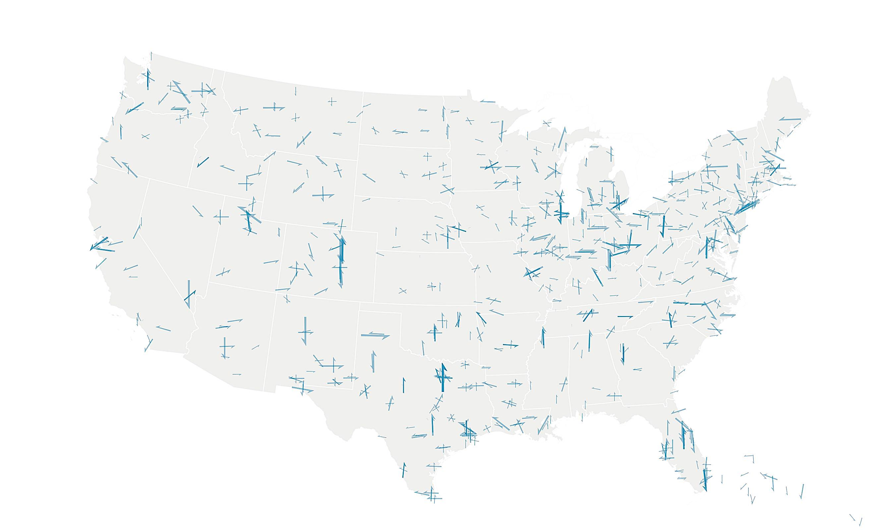

Analyzing more than 1,000 airport runways across the United States.
The Bureau of Transportation Statistics maintains a database of more than 23,0000 runways (or 46,696 as it counts each approach to a runway as in individual runway). This visualization uses only the records that have complete orientation data and runway lengths.
This dataset includes more than seven million feet of runway or some 1,325 miles in all 50 states. There is obvious clustering around cardinal directions: (North, South, East, West), in particular North-South and East-West alignments.